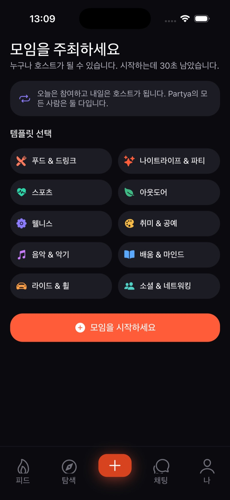
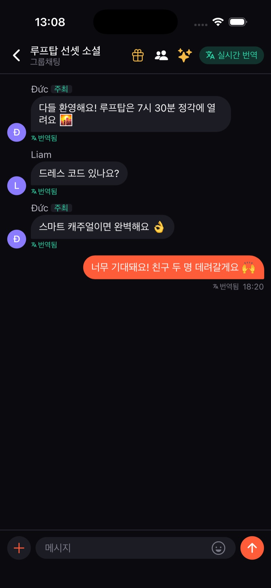

파티야는 호스트가 올린 짧은 영상(릴스)으로 모임의 분위기를 먼저 보고, 마음에 들면 버튼 하나로 참여하는 오프라인 모임 앱입니다. '파티의 인스타그램'을 내걸고 새 도시에 온 사람, 여행자와 디지털 노마드, 모임을 여는 호스트를 위해 만들었습니다.
이런 분이 씁니다
새 도시에 온 사람, 여행자와 디지털 노마드, 모임을 여는 호스트, 일상이 반복되는 직장인
풀어낸 문제
사진 몇 장과 글만으로는 모임의 진짜 분위기를 알기 어렵습니다. 파티야는 영상으로 음악·사람·공간의 공기를 먼저 보여 주고, 그 자리에서 참여까지 이어지게 합니다.
아이작브릿지 개발 범위
iOS·Android를 함께 빌드하는 하나의 앱(Expo·React Native, Supabase 백엔드)으로 피드·탐색·모임·참여·채팅·알림·프로필을 만들었고, 운영자 어드민(Next.js), 공식 사이트 partya.io(앱 소개 /about, 브라우저 체험 /demo)와 30초 브랜드 필름을 만들었습니다.
주요 기능
- 01
릴스 피드
호스트가 올린 짧은 영상을 넘겨 보며 모임을 발견하고, 좋아요와 저장을 남깁니다.
- 02
한 탭 참여
피드나 모임 상세에서 버튼 하나로 참여하거나 취소하고, 참여하면 포인트가 쌓입니다.
- 03
탐색과 지도
검색, 카테고리·오늘·주말 필터와 지도로 가까운 모임을 찾습니다.
- 04
모임 만들기
템플릿을 고르는 생성 화면으로 누구나 모임을 열고, 수정·취소와 좌석 관리를 합니다.
- 05
번역 그룹 채팅
참가자끼리 실시간 그룹 채팅을 하고, 다른 언어로 쓴 메시지를 번역해서 봅니다.
- 06
운영자 어드민
운영자는 데스크톱 콘솔에서 회원과 모임을 관리하고, 모든 변경은 감사 기록에 남습니다.
화면으로 보기


비슷한 일을 소프트웨어로 풀고 싶다면, 지금의 상황부터 알려 주세요.
프로젝트 문의하기